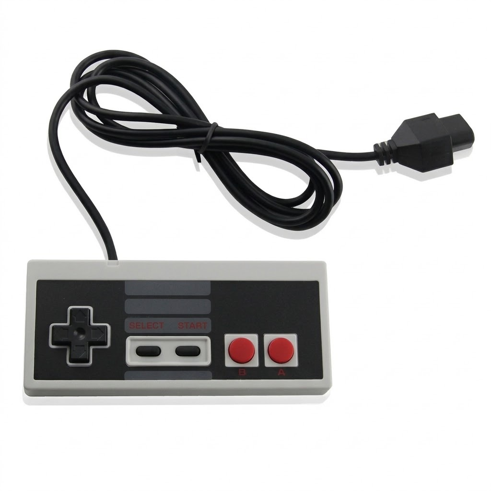
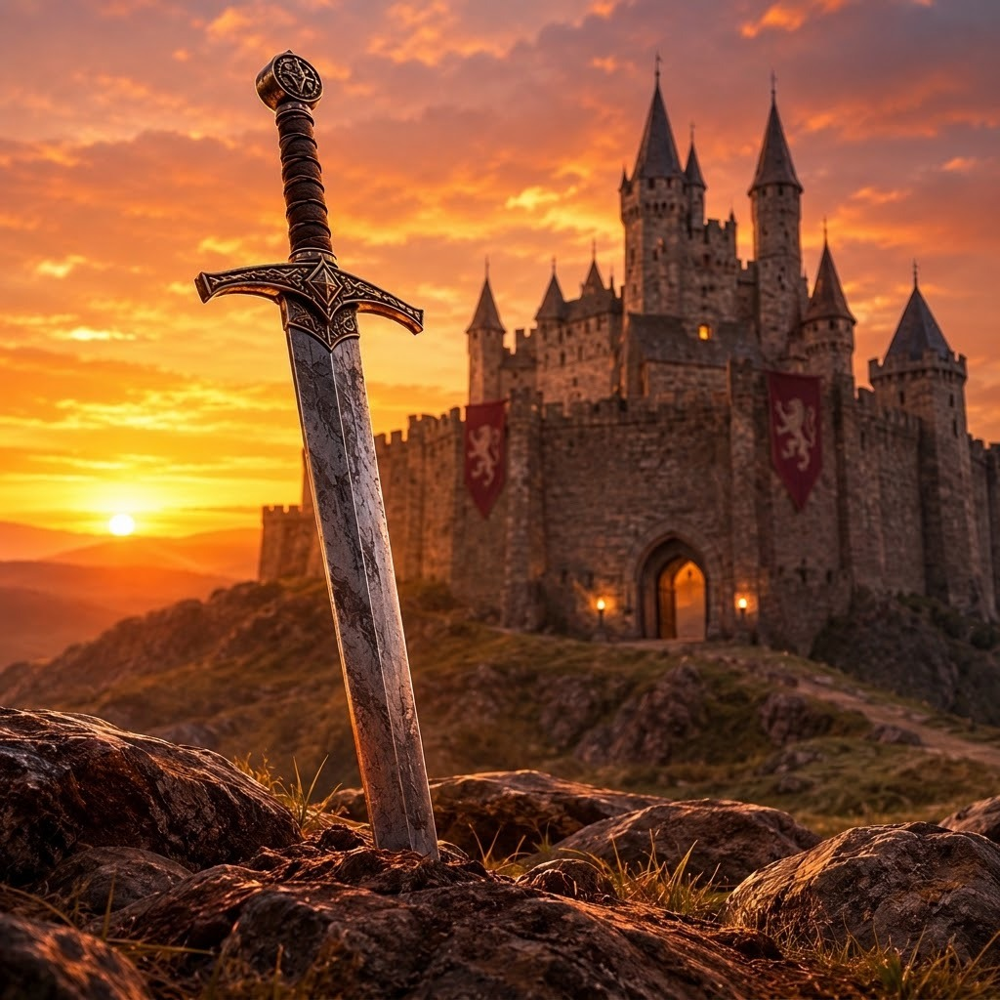

Games para jogar, descobrir e conversar
O Fase Bônus é um blog para quem gosta de games, seja você iniciante ou jogador de longa data.
Aqui você encontra textos curtos e diretos que explicam de onde os jogos vieram, quais vale a pena conhecer e como escolher o próximo da fila. Cada seção reúne a história do tema, uma lista de jogos para começar e dicas práticas, sem exigir que você já conheça o assunto.
Explore os conteúdos em destaque abaixo clicando nas imagens, ou use o menu no topo para navegar entre as páginas. Se quiser sugerir um jogo ou tirar uma dúvida, passe na página de Contatos.
Conteúdos em destaque
-

Games retrô
A história dos consoles de 8 e 16 bits e os clássicos que moldaram o que jogamos hoje.
-

RPGs
Mundos enormes, escolhas que importam e personagens que evoluem junto com você.
-

Indies
Jogos feitos por equipes pequenas, com ideias ousadas e muita personalidade.